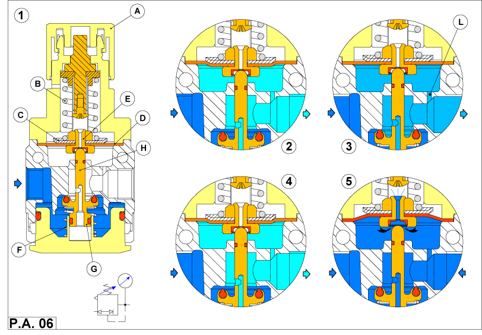

Принципы работы регулятора
Действие внутренних компонентов регулятора представлено на 
рис. Р.А.06
, иллюстрирующем различия при изменяющихся давлении и потоке.
Рис. 1
Здесь представлен общий вид регулятора в свободном состоянии. Пружина В еще не нагружена винтом A.
Поэтому диск С не воздействует на мембрану D.
В центре диска C, имеется отверстие E, которое закрыто штоком H. Шток связан с маленькой втулкой G,
которая взаимодействуют с пружиной F. В этом состоянии воздушного потока нет, поскольку G закрывает главное отверстие.
Рис. 2
Когда винт вращают вручную по часовой стрелке, сжимается пружина. Пружина действует на диск, который
деформируется, перемещая шток и маленькую втулку. В результате возникает поток воздуха через главное отверстие, которое имеет отношение к
нагрузке на пружину деформированную винтом.
Рис. 3
Если оборудование пневмосети не потребляет воздух, давление достигнет действующего значения. Это "вторичное"
давление будет действовать через отверстие L на мембране, уравновешивая силу, прикложенную к пружине B. Шток будет подниматься, и первичное
давление воздуха с пружиной F будет закрывать главное отверстие, каждый раз, когда осевое противодавление, порождаемое вторичным давлением
на мембрану, достигает равновесия с силой, приложенной к пружине.
Рис. 4
Любое действующее оборудование, потребляющее воздух, будет снижать давление, и регулятор автоматически
срабатывает для восстановления параметров требуемого воздушного потока.
Уменьшение давления под мембраной нарушает равновесие таким образом, что главное отверстие снова открывается
при смещении втулки G (см. рис. 3).
Рис. 5
Этим типом регулятора можно уменьшить вторичное давление, или избыточное давление входа любого потребителя
воздуха в пневмосети. Любое избыточное давление или уменьшенное давление, приложенное к пружине поднимает мембрану, Это открывает
отверстие E, выпуская воздух в атмосферу. Когда давление (равновесие пружины) восстановлено, то снова возникает состояние, показанное
на рис. 3. Регуляторы одного типоразмера изготавливаются с различными пружинами, чтобы выполнить требования заказчика.
Регулятор может быть объединен с фильтром в одном корпусе. Это уменьшает и габариты и полную стоимость.